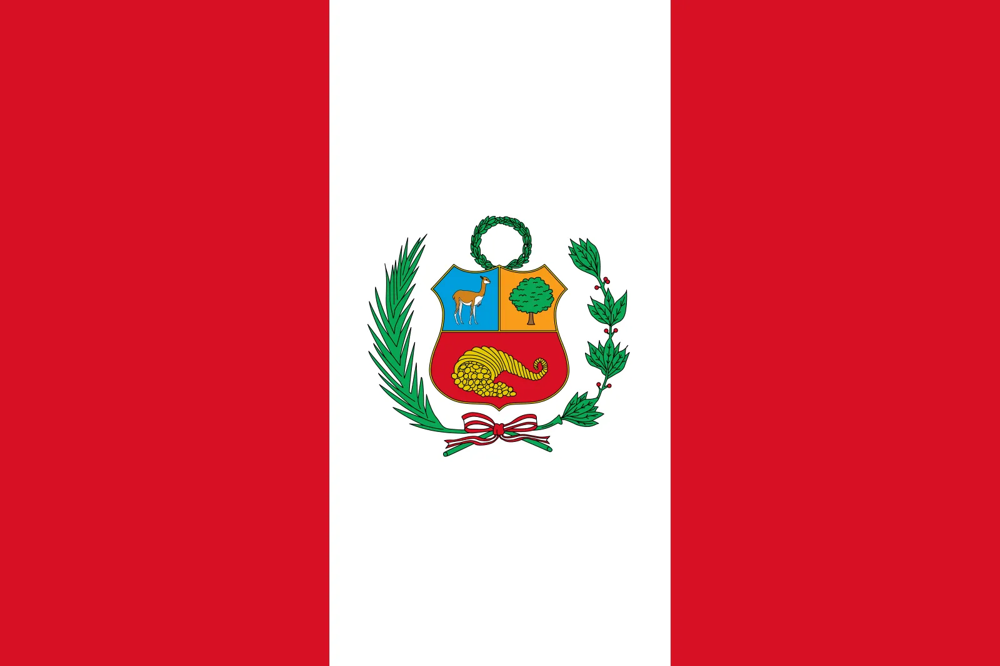

| Current Population: | Image of Flag: | Name of Capital: | Major Cities: | Title of Citizens: | Geographical Coordinates: | Time Zone: |
|---|---|---|---|---|---|---|
| 34.05 million citizens |  | Lima |
|
Peruvians | 9.1900° S, 75.0152° W | Peruvian Standard Time (almost the same as US Central Time) |
Peru began with ancient civilizations such as the Incan Empire. The Incan Empire became the largest empire in pre-Columbian America. In 1532, Spanish conquistadors captured the Incan Emperor, which lead to the fall of the empire and the colonization of Peru. Peru wasn't founded by one person, but by many people upset with the corrupt viceroyalty that Spain placed in leadership. Peru declared independence from Spain in 1821, but afterwards, Peru was riddled with political instability and conflicts. Lima, the capital of Peru, was founded by Francisco Pizarro in 1535. Who was the same person who lead the coup to take over the incans. On April 5th, 1879, the war of the pacific started, which lead to Peru and Bolivia loosing to Chile, and forfeiting some of their costal territory to Chile on October 20th 1883. In the 20th century, Peru experienced economic challenge, which lead to social unrest and the rise of the Shining Path, which was a guerrilla movement.
| Major Land Features: | Major Water Features: | Climate/Biomes | Major Exports: | Common Renewable Resourse: |
|---|---|---|---|---|
|
|
|
|
Peru plans to go 60% renewable by 2025, which it wants to accomplish by using solar in the Drylands, and wind near the coast. |
| Major Languages Spoken: | Major Religions Followed: | Popular Artists: | Popular Musicians: | Popular Foods: | Cultural Norms: |
|---|---|---|---|---|---|
|
|
|
|
|
|
Peru is a Presidential Republic. Peru's current president is Dina Boluarte, who was once a successful lawyer. El Partido De Político Nacional Peru Libre, is the leftist party that gained majority vote in 2021. Fuerza Popular, a right-winged party, is well known for their strong stance on crime. The next election is expected in June of 2026. The Gross Domestic Product of peru is 242.6 billion USD, and steadily growing. Peru's major trade partners include: The United States, Chile, China, The EU, and Brazil.
- Zayin Price Geography Block 6 2024. The part about peruvian food was fact-checked with my peruvian neighbor.